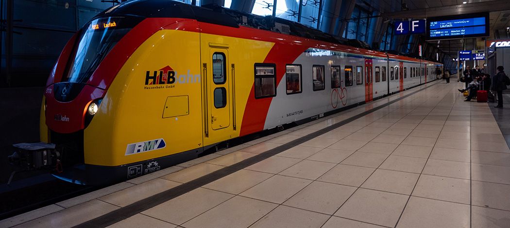

Sustainable Cities and Communities: How Important is It?
The 11th UN Sustainable development goal is Sustaiable Cities and Communities. Although the number of people who live in slums has heavily decreased, there still remain more than 1 billion people who live in such conditions. Access to transportation and open public spaces has been decreasing, and the population has been increasing at a rate the cities are not going to be able to handle. Cities must change to become more sustainable in order to handle the population growth.
Some of the goals within goal 11 are ensure access for all to adequate, safe and affordable housing and basic services and upgrade slums and enhance inclusive and sustainable urbanization and capacity for participatory, integrated and sustainable human settlement planning and management in all countries. Only if goals like these met will we have a chance to not only imrpove our standard of life, but everybody else's as well and prepare for the population increase that is yet to come.
-In 2016, just over 1 billion people lived in slums or informal settlements, with over half (589 million) living in East, South-East, Central and South Asia.
-Based on data from 227 cities from 78 countries in 2018, 53% of urban residents had convenient access to public transport.
-Between 2000 and 2014, areas occupied by cities grew 1.28 times faster than their populations.
-Globally, 2 billion people do not have access to waste collection services and 3 billion people lack access to controlled waste disposal facilities.